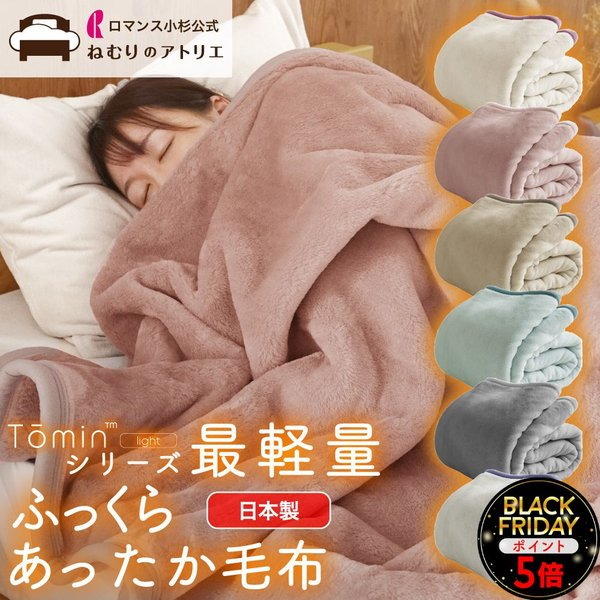
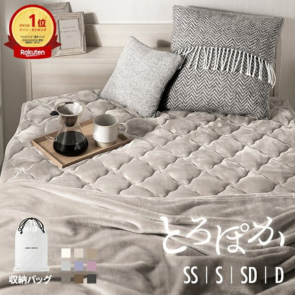
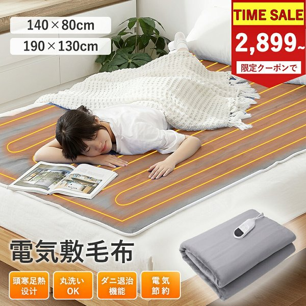
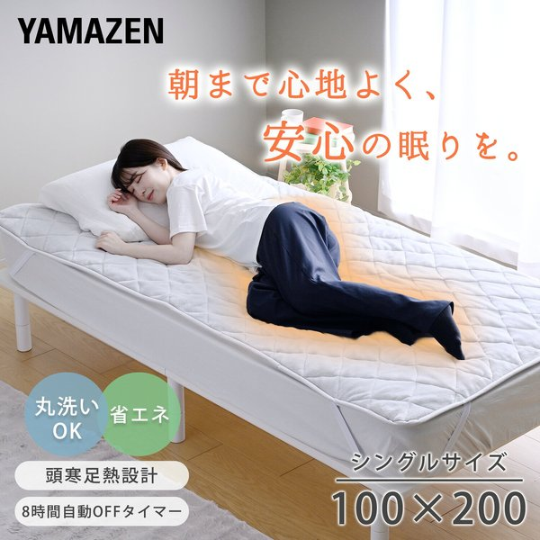
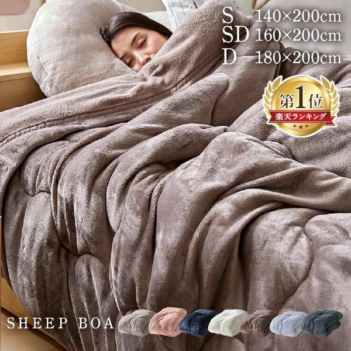
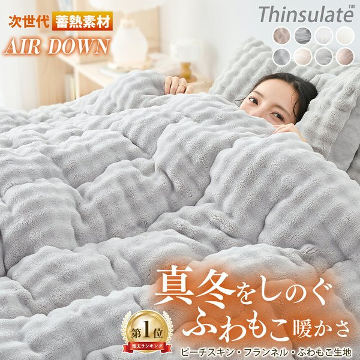
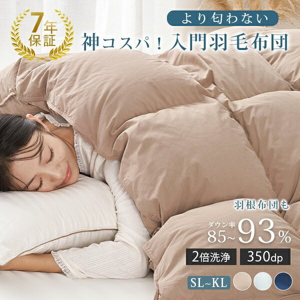
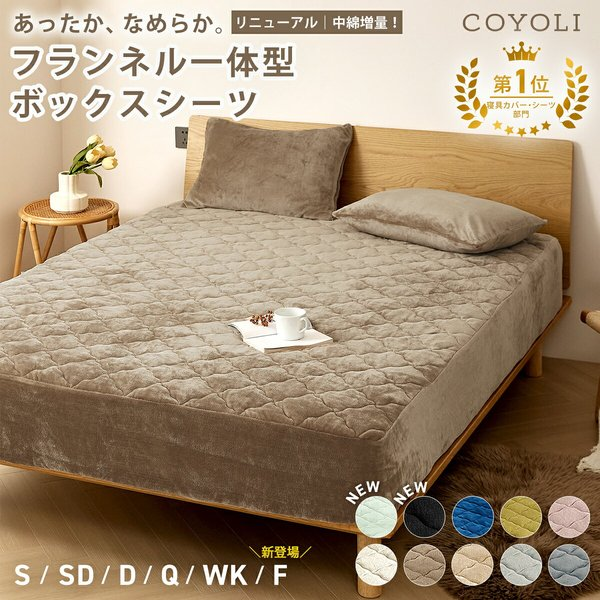
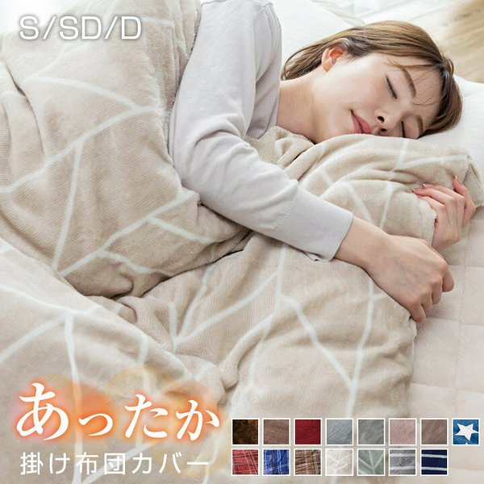
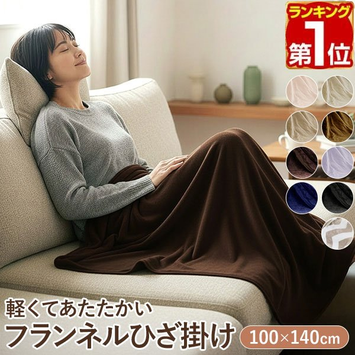

【2026年冬】電気代を抑えて朝まで極暖！高機能毛布・掛け布団・電気敷き毛布＆あったか敷きパッドおすすめ10選
冬の寝具は、掛け布団を厚くするより、下から暖めるほうが効きます。敷きパッドと電気毛布で寝床の底を温め、掛け布団は軽いものを選ぶ。この順番にすると、暖房を1〜2度下げても朝まで眠れます。
選ぶ軸は、素材、洗えるか、そして電気式かどうかの3つです。電気毛布や電気敷きパッドは体の下から温めるので、室温を上げるより少ない電気で暖かく感じます。8時間の自動オフが付いていれば、切り忘れの心配もありません。毛布は2枚合わせのほうが1枚より暖かく、同じ厚みなら日本製のほうが毛足が抜けにくい傾向があります。掛け布団は羽毛と化学繊維で価格差が大きいので、まず敷きパッドと毛布を整え、寒ければ掛け布団を足す順番が失敗しにくい買い方です。
本記事では、楽天市場で人気・高評価の冬の寝具・毛布10選を、実売価格とレビュー評価つきで写真付き紹介します。
- おすすめ10選 スペック・特徴比較表
- BEST 1｜Tominシリーズ 最軽量 あったか毛布 日本製 140×200cm（制電）
- BEST 2｜敷きパッド シングル フランネル あったか（とろとろ触感）
- BEST 3｜電気敷き毛布 シングル 140×80cm／ダブル 190×130cm（丸洗い可）
- BEST 4｜山善 電気敷きパッド シングル 100×200cm YWP-206F（8時間自動オフ）
- BEST 5｜2枚合わせ毛布 厚手 シープボア シングル〜ダブル
- BEST 6｜掛け布団 シングル シンサレート 冬用（丸洗い可）
- BEST 7｜羽毛布団 シングル ダウン85〜93% 立体キルト 350dp
- BEST 8｜ボックスシーツ 冬用 シングル フランネル一体型（着脱簡単）
- BEST 9｜掛け布団カバー シングル フランネル（毛布にもなる冬用）
- BEST 10｜フランネルひざ掛け 大判 100×140cm（洗える・丸洗い可）
- 【読者負担0円】買わなくても得する無料サービス
- まとめ：冬の寝具・毛布10選の選び方
| 順位 | 商品名 | ブランド | 最大の特徴・おすすめ理由 | 総合評価 |
|---|---|---|---|---|
| BEST 1 | Tominシリーズ 最軽量 あったか毛布 日本製 140×200cm（制電） | ロマンス小杉 | 日本製・140×200cmのシングルサイズ | 4.65 |
| BEST 2 | 敷きパッド シングル フランネル あったか（とろとろ触感） | 寝具専門店 dondon | 1,000円台で冬の寝床を底上げできる | 4.71 |
| BEST 3 | 電気敷き毛布 シングル 140×80cm／ダブル 190×130cm（丸洗い可） | 家電専門店（カツショップ） | 下から温めるので電気代が抑えやすい | 4.46 |
| BEST 4 | 山善 電気敷きパッド シングル 100×200cm YWP-206F（8時間自動オフ） | 山善（YAMAZEN） | 8時間自動オフで切り忘れがない | 4.55 |
| BEST 5 | 2枚合わせ毛布 厚手 シープボア シングル〜ダブル | 寝具専門店 RACK-KAN | 2枚合わせで空気の層が暖かい | 4.50 |
| BEST 6 | 掛け布団 シングル シンサレート 冬用（丸洗い可） | 寝具専門店（カイノマホウ） | 軽くて暖かいシンサレート | 4.53 |
| BEST 7 | 羽毛布団 シングル ダウン85〜93% 立体キルト 350dp | 羽毛布団専門店 n-takara | ダウン85〜93%の羽毛 | 4.55 |
| BEST 8 | ボックスシーツ 冬用 シングル フランネル一体型（着脱簡単） | COYOLI | シーツとパッドが一体でずれない | 4.53 |
| BEST 9 | 掛け布団カバー シングル フランネル（毛布にもなる冬用） | 寝具専門店（ふとんカラー） | カバーだけ替えて冬仕様にできる | 4.39 |
| BEST 10 | フランネルひざ掛け 大判 100×140cm（洗える・丸洗い可） | ブランケット専門店（マックスシェア） | 100×140cmの大判サイズ | 4.47 |
Tominシリーズ 最軽量 あったか毛布 日本製 140×200cm（制電）

日本製のマイクロファイバー毛布で、シリーズ名どおり軽さを優先した一枚。毛足が細かく、肌に当たったときの冷たさが少ないので、布団に入った直後の寒さが和らぎます。140×200cmはシングルにちょうど合うサイズで、制電加工があるため乾燥した部屋でもパチパチしにくいのが冬向きです。洗濯機で洗えるので、毛布を干す場所がない部屋でも清潔に保てます。楽天市場での実売価格は約3,299円（2026年11月時点）。
- 日本製・140×200cmのシングルサイズ
- 制電加工で静電気が起きにくい
- レビュー527件・評価4.65
- 軽さを優先した設計なので、極厚の毛布ほどの重みはない
敷きパッド シングル フランネル あったか（とろとろ触感）

フランネルの起毛を厚めに仕立てた敷きパッド。敷くだけで寝床の底が冷えにくくなり、掛け布団を替えずに暖かさを足せます。四隅にゴムが付いていて、寝返りを打ってもずれにくい作りです。1,980円と手が出しやすく、まず冬の寝具を1つだけ変えるならここからが失敗しにくいです。楽天市場での実売価格は約1,980円（2026年11月時点）。
- 1,000円台で冬の寝床を底上げできる
- 四隅ゴムでずれにくい
- レビュー3,026件・評価4.71
- 薄手なので、これ1枚で真冬を越すには掛け布団との併用が前提
電気敷き毛布 シングル 140×80cm／ダブル 190×130cm（丸洗い可）

寝具の下に敷いて使う電気毛布。体の下から温めるので、掛け布団を厚くするより少ない電気で暖かく感じます。温度はスライド式で細かく調整でき、丸洗いできるので汗をかく季節の終わりにも洗えます。シングルは140×80cmで、腰から足元までをカバーする大きさです。楽天市場での実売価格は約5,799円（2026年11月時点）。
- 下から温めるので電気代が抑えやすい
- 丸洗いできる
- レビュー760件・評価4.46
- 敷きっぱなしにすると埃がたまるので、季節の終わりに洗う
山善 電気敷きパッド シングル 100×200cm YWP-206F（8時間自動オフ）

山善の電気敷きパッドで、シングルサイズ100×200cm。頭寒足熱の考え方に沿って足元側を暖かくする設計で、8時間の自動オフタイマーとダニ対策モードが付いています。フランネル調の表面で、電気を切ったあとも暖かさが残ります。敷きパッド型なので、ベッドでも布団でも使えます。楽天市場での実売価格は約9,980円（2026年11月時点）。
- 8時間自動オフで切り忘れがない
- ダニ対策モード付き
- レビュー97件・評価4.55
- レビューは97件と100件に少し届かず、口コミは増えている途中
2枚合わせ毛布 厚手 シープボア シングル〜ダブル

2枚の生地を合わせた厚手の毛布で、表はシープボア、裏はフランネル調の起毛。1枚ものの毛布より空気の層が増えるぶん、同じ室温でも暖かく感じます。シングルからダブルまでサイズを選べ、洗濯機で洗えるので犬や猫がいる家でも扱いやすいです。掛け布団の上に1枚かけるだけで、暖房の設定温度を1〜2度下げられます。楽天市場での実売価格は約2,981円（2026年11月時点）。
- 2枚合わせで空気の層が暖かい
- シングル〜ダブルのサイズ展開
- レビュー1,242件・評価4.50
- 厚手なので、洗濯後の乾燥には時間がかかる
掛け布団 シングル シンサレート 冬用（丸洗い可）

化学繊維のシンサレートを使った冬用の掛け布団。羽毛のように軽く、湿気がこもりにくい素材で、布団が重いと感じる人に向いています。表裏とも起毛加工で、掛けた瞬間のひんやり感が少ないのが冬向きです。丸洗いできるので、羽毛布団のようにクリーニングに出す必要がありません。楽天市場での実売価格は約2,480円（2026年11月時点）。
- 軽くて暖かいシンサレート
- 自宅の洗濯機で丸洗いできる
- レビュー4,911件・評価4.53
- 羽毛のふくらみはないので、沈み込みのある寝心地を求める人には不向き
羽毛布団 シングル ダウン85〜93% 立体キルト 350dp

ダウン率85〜93%の羽毛布団で、350dpのふくらみを持つグレード。立体キルトで羽毛が偏りにくく、肩や足元まで暖かさが続きます。2層式の縫製で、羽毛が抜けにくい作りです。化学繊維の掛け布団より価格は上がりますが、軽さと保温のバランスは羽毛が有利で、10年以上使う前提なら1年あたりの負担は小さくなります。楽天市場での実売価格は約6,680円（2026年11月時点）。
- ダウン85〜93%の羽毛
- 立体キルトで羽毛が偏りにくい
- レビュー505件・評価4.55
- 価格が高く、乾燥機の使用は避けて陰干しにする
ボックスシーツ 冬用 シングル フランネル一体型（着脱簡単）

マットレスに被せて使うボックスシーツの冬用タイプ。シーツと敷きパッドが一体になっているので、寝返りでシーツがずれません。マイクロファイバーの起毛で、冷たいシーツに足が触れる感覚がなくなり、朝の寝起きが変わります。着脱は袋状に被せてゴムで留めるだけなので、洗濯のたびに手間取りません。楽天市場での実売価格は約2,690円（2026年11月時点）。
- シーツとパッドが一体でずれない
- 起毛で冷たくない
- レビュー1,661件・評価4.53
- マットレスの厚みによっては、サイズを確認してから買う
掛け布団カバー シングル フランネル（毛布にもなる冬用）

フランネル地の掛け布団カバーで、毛布をかけているような暖かさがあります。布団カバーを替えるだけで、掛け布団の中身はそのままに冬仕様へ移行できるのが利点です。ファスナー式で、洗濯のたびに付け替えられます。毛布を1枚増やすより場所を取らず、洗濯の回数も増えません。楽天市場での実売価格は約2,580円（2026年11月時点）。
- カバーだけ替えて冬仕様にできる
- 毛布いらずの暖かさ
- レビュー2,536件・評価4.39
- 起毛がへたると暖かさが落ちるので、2〜3年で買い替えが目安
フランネルひざ掛け 大判 100×140cm（洗える・丸洗い可）

リビングで使う大判のひざ掛け。100×140cmあるので、膝から足先まで覆えて、ソファで座ったまま温まれます。フランネルの起毛で肌触りがよく、洗濯機で丸洗いできます。暖房の効きを待つあいだ、これ1枚を膝に置くだけで体感が変わるので、在宅時間が長い冬に向いています。楽天市場での実売価格は約1,210円（2026年11月時点）。
- 100×140cmの大判サイズ
- 洗濯機で丸洗いできる
- レビュー845件・評価4.47
- 毛足が長いので、洗濯はネットに入れて弱いコースで
この記事の商品を買う前に、まずは無料で得する選択肢をチェック。どれも登録・利用は0円で、無料期間中に解約すれば料金はかかりません。読みたい雑誌がある人、ポイントを貯めたい人、アンケートなら気軽という人、それぞれに合うものを選べます。
初回31日無料・無料期間中に解約すれば0円 → 楽天ポイントモール｜登録無料で毎日ポイ活
買い物なしでもポイントが貯まる無料サービス → 楽天インサイト｜アンケートに答えてポイント
登録無料・すきま時間のアンケートで貯まる → 楽天カード｜年会費永年無料
新規発行・年会費ずっと0円 →
4つのサービスの違いと使い分けは「出費0円で得する！買わずにポイントが貯まる無料サービス厳選4選」でまとめています。
💡 まとめ：冬の寝具・毛布10選の選び方
冬の寝床は、下から順に整えるのが近道です。敷きパッドで底の冷えを取り、電気毛布か電気敷きパッドで足元を温め、掛け布団は軽いものを選ぶ。毛布は2枚合わせか、日本製の毛足の細かいものを1枚。掛け布団カバーをフランネルに替えるだけでも、毛布を1枚増やすのと同じくらい暖かくなります。電気式はタイマーと自動オフを確認し、シーズンの終わりに洗ってから収納すると翌年も同じ暖かさで使えます。全部を一度に揃える必要はなく、寒さが気になったところから1つずつ足していくのが続けやすい買い方です。
楽天市場では「5と0のつく日」や「お買い物マラソン」などのキャンペーンに合わせて購入すると、ポイント還元が最大化してお得に手に入ります。ぜひチェックしてみてくださいね。